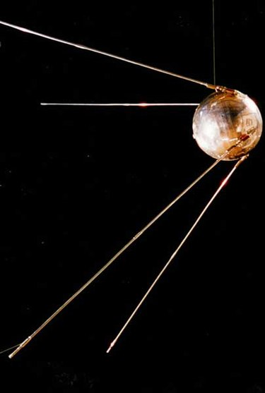
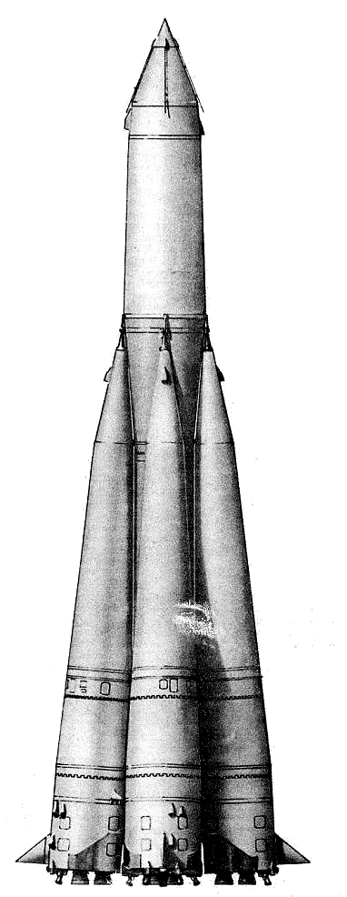
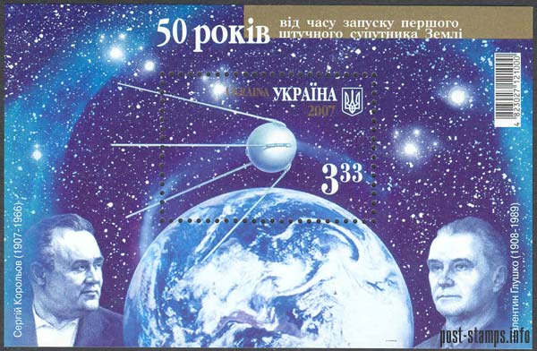

Sputnik
Indice
- Sputnik
- Foguete R7
- Repercução
Sputnik
O Sputnik-1 (em russo: Спутник-1), inicialmente batizado Iskusstvenni Sputnik Zemli

Foguete
foguete R-7 foi projetado pelo OKB-1, com Sergei Koroliov como seu projetista-chefe.

Repercução
O lançamento do Sputnik-1 foi recebido com grande surpresa

Bibliografia
Autor: Hiago FJ
Sputnik: Wikipedia
Sputnik: Wikipedia
Sputnik: Wikipedia